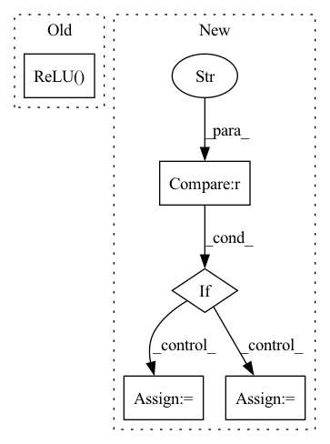

Pattern ID :559
Before Change
for i in range(n_layers-1):
if i != n_layers-2:
module_list += [nn.Linear(n_hidden_units, n_hidden_units),
nn.ReLU( True) ]
else:
module_list += [nn.Linear(n_hidden_units, 3),
nn.Sigmoid()]After Change
act="relu", **kwargs):
super().__init__()
if act == "relu" :
act = nn.ReLU(True)
elif act == "gaussian":
act = GaussianActivation(a=kwargs["a"])
elif act == "quadratic":
act = QuadraticActivation(a=kwargs["a"])
elif act == "multi-quadratic":
act = MultiQuadraticActivation(a=kwargs["a"])
elif act == "laplacian":
act = LaplacianActivation(a=kwargs["a"])
elif act == "super-gaussian":
act = SuperGaussianActivation(a=kwargs["a"], b=kwargs["b"])
elif act == "expsin":
act = ExpSinActivation(a=kwargs["a"])
In pattern: SUPERPATTERN
Frequency: 3
Non-data size: 5
Instances Fragment ID: 1933085
Project Name: kwea123/coordinate-mlps
Commit Name: 08f1c38dbeb74fdee69bde97d075cedf5218871c
Time: 2022-05-01
Author: kwea123@gmail.com
File Name: models.py
M Class Name: MLP
N Class Name: MLP
M Method Name: __init__(5)
N Method Name: __init__(4)
M Parent Class: nn.Module
N Parent Class: nn.Module
M File Name: models.py
N File Name: models.py
M Start Line: 10
M End Line: 14
N Start Line: 9
N End Line: 30
Fragment ID: 1933149
Project Name: allenai/embeddingrecycling
Commit Name: e8f2ce21388322a4ea20ce43cd214ed12c49e8fd
Time: 2022-03-15
Author: jonsaadfalcon@gmail.com
File Name: General_BiLSTM+LinearClassifer.py
M Class Name: CustomBERTModel
N Class Name: CustomBERTModel
M Method Name: __init__(6)
N Method Name: __init__(5)
M Parent Class: nn.Module
N Parent Class: nn.Module
M File Name: General_BiLSTM+LinearClassifer.py
N File Name: General_BiLSTM+LinearClassifer.py
M Start Line: 32
M End Line: 47
N Start Line: 30
N End Line: 62
Fragment ID: 1933105
Project Name: lehduong/knowledge-distillation-by-replacing-cheap-conv
Commit Name: c21fd1d675f1df0d076e4efb312e30a15dc1c6ba
Time: 2020-03-10
Author: oopsxilitol@gmail.com
File Name: models/cifar_models/resnet.py
M Class Name: BasicBlock
N Class Name: BasicBlock
M Method Name: __init__(5)
N Method Name: __init__(5)
M Parent Class: nn.Module
N Parent Class: nn.Module
M File Name: models/cifar_models/resnet.py
N File Name: models/cifar_models/resnet.py
M Start Line: 27
M End Line: 33
N Start Line: 59
N End Line: 78